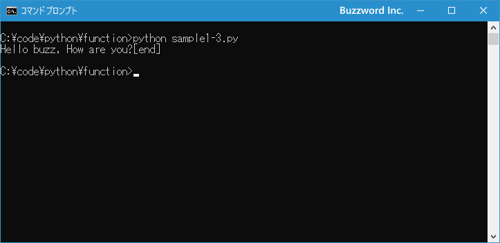
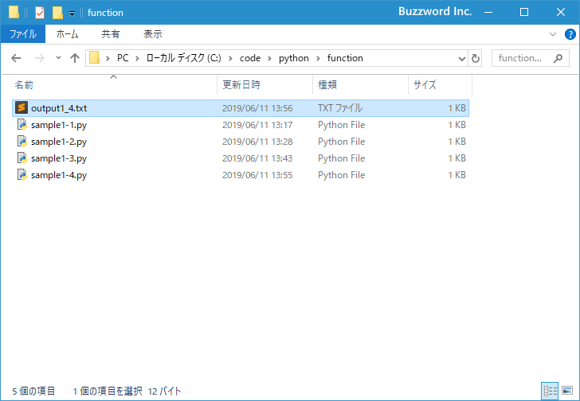
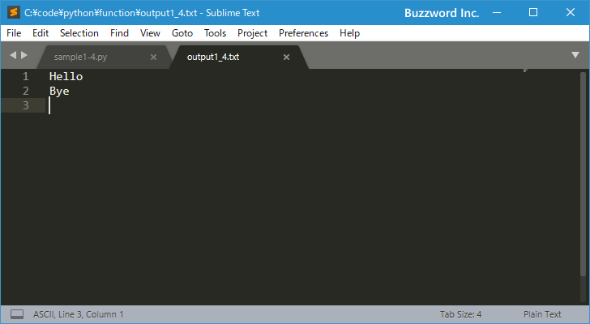

- Home ›
- Python入門 ›
- 組み込み関数の使い方
print関数の使い方(文字列を出力する)
Python で用意されている組み込み関数の中の print 関数の使い方です。引数に指定した文字列を標準出力などへ出力するのに使用します。
print関数の書式と基本的な使い方
print 関数の書式は次の通りです。
print(*objects, sep=' ', end='\n', file=sys.stdout, flush=False)
一番基本的な使い方は引数に文字列を指定して実行します。標準出力に対して引数に指定した文字列が出力されます。この時、デフォルトの設定では最後に改行が出力されます。
print("Hello")
引数に文字列ではない数値などを指定した場合、 str 関数によって文字列に変換されて出力されます。
print(100)
引数にはカンマで区切り複数の文字列を指定することができます。
print("Blue", "Red", "Green")
デフォルトの設定では空白で区切られて出力されます。上記の場合は Blue Red Green のように出力されます。
次のサンプルを見てください。
print("Hello")
>> Hello
print(256)
>> 256
print("Blue", "Red", "Green")
>> Blue Red Green
引数に指定した文字列や数値が画面に出力されました。それぞれの print 関数を実行すると最後に改行がされています。
区切り文字を変更する
引数にカンマで区切り複数の文字列を指定した場合、デフォルトの設定では空白で区切られて出力されます。空白ではなく別の区切り文字に変更したり区切り文字を無くして続けて出力したい場合には sep="区切り文字" で指定します。
print(*objects, sep='区切り文字')
区切り文字を + にしたい場合は seq='+' に、区切り文字を無くしたい場合は seq='' にしてください。
次のサンプルを見てください。
# デフォルトの設定
print("Blue", "Red", "Green")
>> Blue Red Green
# 区切り文字を "+" に変更
print("Blue", "Red", "Green", sep="+")
>> Blue+Red+Green
# 区切り文字を無くして続けて出力
print("Blue", "Red", "Green", sep="")
BlueRedGreen
複数の文字列をカンマで区切って引数に指定した場合に、区切り文字を任意の文字に変更することができました。
print関数を実行した時に改行しないようにする
print 関数を実行すると、自動で改行が行われます。これはデフォルトの設定で最後に自動で改行を出力するように設定されているためです。 print 関数を実行した時に最後に改行をしないようにするには end='' と指定します。
print(*objects, end='')
end には最後に出力する文字列を指定できます。デフォルトでは end='\n' となっており改行が行われますので改行を行いたくない場合は空の文字列を指定してください。なお改行以外の別の文字列を指定することもできます。
次のサンプルを見てください。
# デフォルトの設定
print("Hello");print("Python")
>> Hello
>> Python
# 改行しないように設定：
print("Hello", end="");print("Python")
>> HelloPython
# 最後に任意の文字列を出力するように設定
print("Hello", end="[end]\n")
>> Hello[end]
print 関数を実行した時に改行しないようにしたり、任意の文字列を最後に出力したりすることができました。
ファイルへ出力する
print 関数はデフォルトでは標準出力である画面に対して出力されますが、画面ではなくファイルに対して出力することもできます。
print(*objects, file=sys.stdout)
出力先である file 引数は、 write(string) メソッドを持つオブジェクトでなければなりません。例えばファイルに対して出力する場合は次のように行います。
myfile = open("output.txt", "w")
print("Hello", file=myfile)
myfile.close()
簡単なサンプルプログラムを作って試してみます。テキストエディタで次のように記述したあと、 sample1-4.py という名前で保存します。
myfile = open("output1_4.txt", "w")
print("Hello", file=myfile)
print("Bye", file=myfile)
myfile.close()
その後、次のように実行してください。
python sample1-4.py

今回は標準出力である画面には何も出力されていません。それではプログラムが保存されたディレクトリを見てください。 output1_4.txt というファイルが作成されています。

ファイルをテキストエディタで開いてみると、 print 関数で出力された文字列がファイルに保存されていることが確認できます。

-- --
Python の組み込み関数の一つである print 関数の使い方について解説しました。
( Written by Tatsuo Ikura )

著者 / TATSUO IKURA
初心者～中級者の方を対象としたプログラミング方法や開発環境の構築の解説を行うサイトの運営を行っています。